For my grandfather, winter, february 2022.
서울 서초구 반포동
총 3,410세대, 44개동
2009.03.84㎡ ~ 301㎡
판매가 24억 5천만 ~ 72억
년 임대료 13.5억 ~ 42억 원
판매 363건 J년 임대료 327건 월세 444건
서울 서초구 반포동
총 3,410세대, 44개동
2009.03.84㎡ ~ 301㎡
판매가 24억 5천만 ~ 72억
년 임대료 13.5억 ~ 42억 원
판매 363건 J년 임대료 327건 월세 444건
서울 서초구 반포동
총 3,410세대, 44개동
2009.03.84㎡ ~ 301㎡
판매가 24억 5천만 ~ 72억
년 임대료 13.5억 ~ 42억 원
판매 363건 J년 임대료 327건 월세 444건
이번 임시총회는 도시정비법에 따라 조합원 3분의 2 이상이 찬성해야하만 안건이 통과되어 사업추진이 가능합니다. 바쁘시더라도 사업시행 계획 변경을 포함한 14개 안건을 검토하셔서 신속히 재건축사업이 진행될 수 있도록 직접 또는 우편 등으로 소중한 한 표를 행사하여 주시기 바랍니다.
84b
type
1. 공간 활용과 채광을 강화한 안방
2. 클린 현관, 현관중문, 에어드레서
3. 음식물 쓰레기 이송설비가 적용된 통합 유틸리티룸
4. 상부 풀 수납장 와이드 주방창
5. 디럭스 드레스룸
6. 침실 붙박이장
7. 분리형 구조가 적용된 호텔형 공용욕실
8. 부티크 전용 욕실
132세대
202 m2
112c
type
1. 공간 활용과 채광을 강화한 안방
2. 클린 현관, 현관중문, 에어드레서
3. 음식물 쓰레기 이송설비가 적용된 통합 유틸리티룸
4. 상부 풀 수납장 와이드 주방창
5. 디럭스 드레스룸
6. 침실 붙박이장
7. 분리형 구조가 적용된 호텔형 공용욕실
8. 부티크 전용 욕실
9. 현관 펜트리
10. 오픈 발코니 사용성 개선
11. 조망형 전용 욕실
94세대
302m2
대표적 ‘한강변 강남 아파트’인 서울 서초구 반포동 ‘아크로리버파크’의 전용면적 84㎡ 매매가격이 최고가를 경신했다. 부동산 시장이 조정기를 겪고 있지만 강남권 고가 주택에 대한 수요는 꾸준하다는 게 부동산 전문가들의 분석이다. 지난해 11월에는 같은 평형 11층 매물이 45억원에 매매계약서를 썼다. 이 단지 전용 84㎡는 2019년 10월 34억원에 거래되면서 강남 아파트 평당 1억원 시대를 열어 화제를 모았다.
반포미도 2호점과 인근 반포미도 1호점도 재건축 중이다. 1987년 완공된 1호차는 84㎡ 규모의 단독주택에 총 1,260세대가 입주할 수 있는 단독주택이다. 2017년 12월 안전진단을 통과했고, 업무 속도는 2차보다 빠르다. 용적률은 177%로 2위보다 낮다. 현재 정비구역 지정을 진행 중이다. 2차 반포미도준비위원회는 향후 1차와 함께 시너지 효과를 낼 것으로 기대된다. 준비위원회 관계자는 "1차와 2차 사업이 동시에 완료되면 반포의 새로운 랜드마크로 거듭날 것"이라고 강조했다.
유형
방3,화장실2,거실,베란다
1. 공간 활용도와 조명이 향상된 마스터 침실
2. 깔끔한 입구, 현관문, 에어드레서
3. 음식물쓰레기 이송시설이 있는 통합 다용도실
4. 상부 수영장 캐비닛 넓은 주방 창
5. 디럭스 탈의실
6. 침실 옷장
7. 분리된 구조의 호텔식 공용 욕실
8. 부티크 전용 욕실
132세대
202m2
홍 부총리는 매매 시장과 관련해 “올해 들어 서울은 4주, 수도권은 3주, (서울) 강남4구는 2주 연속 매매가격지수가 하락하는 등 하향 안정세가 뚜렷하고 빠르게 확산되는 모습”이라고 평가했다. 전세 시장에 대해서도 “서울의 전세수급지수가 2012년 한국부동산원 집계 이후 최장인 14주 연속 하락했다”고 분석했다. 그러면서 “최근 다양한 지표는 주택시장이 이제 변곡점을 지나 추세적 하향안정 국면에 진입했다는 인식이 광범위하게 확산되고 있음을 시사한다. 정부는 이런 주택가격 조정이 지속하도록 정책 기조를 일관되게 견지해나갈 것”이라고 덧붙였다.
또한 조합은 이주를 위한 업무와 함께 삼성물산에서 제시한 대안 설계를 반영하기 위해 삼성 물산의 설계팀 및 조합의 협력 업체들과 수차례 회의를 하여 사업시행계획 변경을 위한 설계도면을 완성 하였습니다. 허가 과정에서 일부 변경될 수 있지만 기존안 보다는 조합원 여러분들의 의견이 수용되고, 생활하기 편리한 도면으로 변경 되었다 생각합니다.
62c
type
1. 공간 활용과 채광을 강화한 안방
2. 클린 현관, 현관중문, 에어드레서
3. 음식물 쓰레기 이송설비가 적용된 통합 유틸리티룸
4. 상부 풀 수납장 넓은 주방창
5. 침실 붙박이장
6. 부티크 전용 욕실
202세대
178m2
84b
type
1. 공간 활용과 채광을 강화한 안방
2. 클린 현관, 현관중문, 에어드레서
3. 음식물 쓰레기 이송설비가 적용된 통합 유틸리티룸
4. 상부 풀 수납장 와이드 주방창
5. 디럭스 드레스룸
6. 침실 붙박이장
7. 분리형 구조가 적용된 호텔형 공용욕실
8. 부티크 전용 욕실
132세대
202m2
인천(-0.01% → -0.02%), 경기(-0.02% → -0.03%)는 하락폭이 소폭 증가했다.
광주(0.05%→0.07%)에서는 광산구(0.11%)와 북구(0.09%)가 고르게 상승하며 상승폭이 확대됐다. 반면 대구(-0.09% → -0.13%)는 백로그 현상이 지속되면서 하락폭이 확대됐다.
전국 주간 아파트 전세가격 변동폭은 지난주와 마찬가지로 -0.01%를 기록했다. 서울(-0.03% → -0.03%)과 경기(-0.04% → -0.04%)가 하락세를 유지한 반면 인천(-0.06% → -0.12%)은 하락폭이 확대됐다.
지방은 울산(-0.01% → 0.07%) 전세가격이 상승세를 보였고, 대전(-0.05% → -0.09%)은 하락폭이 더 컸다.
성북구(-0.09%)는 길음뉴타운과 정릉동을 중심으로 가격조정 하향거래를 보였고, 강남구(-0.01%)는 중소기업을 중심으로 하락했고, 서초구(-0.01%)는 중소기업을 중심으로 하락했다. -0.01%) 반포동 일부 신축을 제외하고는 건실화가 약함.
전국 아파트 가격이 2년 5개월 만에 하락세로 돌아섰다.
24일 한국부동산연구원은 2022년 2월 셋째주(2월 21일 기준) 전국 아파트 주간가격 동향을 조사했다.
서울(-0.02% → -0.02%)은 하락세를 이어갔다. 일반적으로 가격 조정 긴급 판매에 주로 거래되기 때문에 지난 주에 하락세를 유지했습니다
서울 서초구 반포동
총 3,410세대, 44개동
2009.03.84㎡ ~ 301㎡
판매가 24억 5천만 ~ 72억
년 임대료 13.5억 ~ 42억 원
판매 363건 J년 임대료 327건 월세 444건
이 단지 전용 71㎡는 지난해 9월 23억3000만원에 매각돼 최고가를 경신했다. 현재 호가는 23~240억원이다.
1989년 준공된 이 아파트는 지상 최고 15층, 3개 동, 435가구(전용면적 59·71㎡)로 이뤄져 있다. 서울 지하철 3·7·9호선 고속터미널역에서 5분이면 닿는다. 서울성모병원이 도보권에 있는 데다 단지 앞에 학원가가 형성돼 있어 주거 편의성이 높다는 평가를 받는다. 서리풀공원 산책로와 연결돼 ‘숲세권’ 아파트로도 불린다. 반포나들목(IC)을 통한 경부고속도로 진·출입도 쉽다. 용적률은 200%다. 준비위 관계자는 “주민들의 재건축 찬성률이 75%에 달할 정도로 재건축 추진에 대한 열의가 높다”며 “2027년 준공을 목표로 신속하게 사업을 추진할 것”이라고 했다.
22일 국토교통부 실거래가공개시스템에 따르면 ‘아크로리버파크’ 전용 84.9㎡(8층) 매물이 지난달 21일 46억6000만원에 거래됐다. 반포동 A공인 관계자는 “3.3㎡당 금액으로 환산하면 1억3705만원 수준”이라며 “한강 조망이 가능한 매물이라 높은 가격에 거래됐다”고 말했다.
제1호 안건: 조합 기 수행업무 추인의 건 - 가결
제2호 안건: 삼성물산 계약 체결 추인의 건 - 가결
제3호 안건: 조합 정관 일부 개정의 건- 가결
제4호 안건: 조합 선거관리 규정 일부 개정의 건 - 가결
제5호 안건: 관리처분 계획 수립의 건- 가결
제6호 안건: 이주시기 결정의 건- 가결
제7호 안건: 법인세 과표산정을 위한 건 건- 가결
제8호 안건: 정비기반 시설 설치 공사 가결
112c
type
1. 공간 활용과 채광을 강화한 안방
2. 클린 현관, 현관중문, 에어드레서
3. 음식물 쓰레기 이송설비가 적용된 통합 유틸리티룸
4. 상부 풀 수납장 와이드 주방창
5. 디럭스 드레스룸
6. 침실 붙박이장
7. 분리형 구조가 적용된 호텔형 공용욕실
8. 부티크 전용 욕실
9. 현관 펜트리
10. 오픈 발코니 사용성 개선
11. 조망형 전용 욕실
94세대
반포동 1066 대지
A반포주공1단지
서울시 서초구 반포동
재건축3,590세대총99동
1973.01.72㎡ ~ 204㎡
매매시세27억8,000 ~ 33억5,000
전세시세3억3,000 ~ 4억3,000
매매264건전세0건월세0건
이후 8월 17일 부터 8월 25일까지 이주계획 및 산탁 등기 서류접수를 실시하여 9일만에 약 90%의 조합원이 서류접수를 완료하였고, 조합은 9월 1일 이주를 개시하여 9월 28일 현재 325세대가 이주하여 원활하게 이주가 진행되고 있어 여타 재건축 조합 보다도 신속히 재건축 사업이 진행되고 있습니다. 이 모든 것이 조합원의 관심과 성원 덕분이라 생각하며, 앞으로도 조합원 여러분의 성원에 보답할 수 있도록 최선을 다하겠습니다. 감사드립니다.
반포 아파트(제3주구) 조합원 여려분 안녕하세요? 조합장 N 입니다.
조합은 올해 2월 26일 관리처분계획 수립을 위한 정기총회 이후 3월 12일 관리 처분계획 인가를 서초구청에 신청하여 약 4개월만인 7월 14일 관리처분인가를 받았습니다.
반포 아파트(제3주구) 조합원 여려분 안녕하세요? 조합장 N 입니다.조합은 올해 2월 26일 관리처분계획 수립을 위한 정기총회 이후 3월 12일 관리 처분계획 인가를 서초구청에 신청하여 약 4개월만인 7월 14일 관리처분인가를 받았습니다.
ⓒ 2021. kaya paik all rights reserved.
 반포 아파트_goodbye
반포 아파트_goodbye
 반포 아파트_goodbye2
반포 아파트_goodbye2
 반포 아파트_이알림사
반포 아파트_이알림사
---
 반포 아파트_번호표
반포 아파트_번호표
어느덧 놀이터에 다다랐다. 모든 놀이 기구들은 길다란 공가 스티커로 칭칭 감겨져 있다. '침범 시 500백만원의 벌금이 부과 됩니다.' 가 연달아 쓰여 있다.
놀이터 한켠에 정자 지붕을 다 덮고 있는 커다란 버드나무가 눈에 들어왔다.
 반포 아파트_스팸 메일
반포 아파트_스팸 메일
 반포 아파트_ 패키지
반포 아파트_ 패키지
 반포 아파트_낙서
반포 아파트_낙서
 반포 아파트_반송
반포 아파트_반송
이 공간과 터전에 속해 있던 모든 사물들은 사라질 것이다. 그러나 나무 만은 사라지지 않을것을 주민들에게 약속하는 징표 였으면 한다. 이전에 엄마가 이런 이야기를 해준 적이 있다. 여기 나무들은 다 신령이 깃들어 있어 우리에게 매 순간 말을 걸고 있다고. 이곳은 사람만 사는 곳이 아니라 나무와 공존하는 곳이다. 나무가 숨이 트일 수 있는 터전을 만들어 준다 했다. 그래서 사람들이 여기를 떠나기 싫어하는 것이라고.
할아버지는 이 동네의 기운이 사라지지 않기를 소망하셨다. 이 동네는 고층 건물 투성이인 서울의 여느 동네들 과 달리 숲속에 들어와 있는 느낌을 준다고 하셨다.
지금껏 이곳 주민들은 매일같이 나무들과 소통하며 지내왔다. 거대한 고목들이 외부의 소리를 차단시키고 휴식처와 같은 분위기를 조성한다. 마음이 진정되고 주민들의 숨소리 에서는 나무냄새가 난다. 나무의 기운이 살아 이야기를 건네는 듯하다.
 반포 아파트_독서실
반포 아파트_독서실
 반포 아파트_미용실
반포 아파트_미용실
 반포 아파트_동화책
반포 아파트_동화책
 반포 아파트_아지트
반포 아파트_아지트
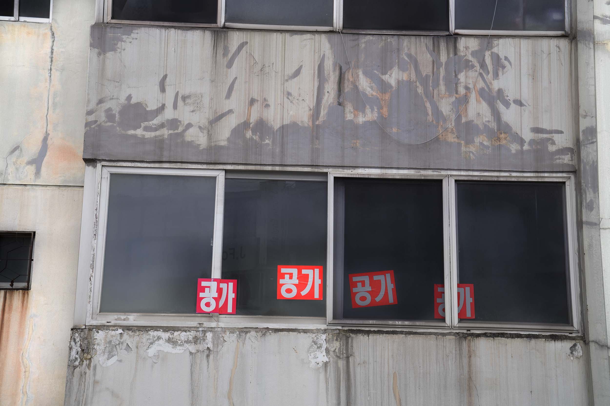
반포 아파트_우리동네 스티커
 반포 아파트_패키지 옵션 세트
반포 아파트_패키지 옵션 세트
 반포 아파트_플랜카드
반포 아파트_플랜카드
kay는 할아버지의 버드나무를 찾으러 동네를 돌아다녔다.
kay는 발견했다. 어릴적 아파트 3층 정도의 높이였던 나무들이 한 시선에 담을 수 없을 만큼 장엄 해졌다는 것을. 이제는 모든 나무들이 아파트들 보다 키가 크다. 이전에는 나무가 건물을 집어삼킨다는 듯 하다고 생각했는데, 지금 보니 나무들이 아파트보고 가지 말라고 감싸주고 지켜주는 느낌이 더 크다. 마치 보호막 처럼. 해가 지니 나무의 그림자들이 더 층층이 쌓이면서 커다랗고 따듯한 온실이 되는 듯 했다.
Kay는 이곳의 ‘나무’가 과거와 현재, 미래를 이어주는 매개채 인듯 하다고 생각했다. 주민들도 지금껏 재건축 과정이 미뤄졌던 큰 이유가 고목들 때문이었다고들 이야기한다. 처음 재건축이 거론 되었을 때도 너도 나도 ‘우리 어디가지’ 보다 나무 걱정이 컸다.
현재 그 나무들은 번호가 매겨지고 있다.
번호가 진정 의미하는 것은 무엇일까. 어디 입양을 가는 것일까? 팔려가는 것일까? 입양 갔다가 다시 돌아오기는 하는걸까? 나중에 제자리로 돌아올지 어쩔지는 모르지만 다시 돌아온다는것을 암시하는 숫자들 이길 어렴풋이 빌어본다.
 반포 아파트_숨바꼭질
반포 아파트_숨바꼭질
 반포아파트_선물
반포아파트_선물
 반포 아파트_프라스틱
반포 아파트_프라스틱
 반포 아파트_우리동네 포스터
반포 아파트_우리동네 포스터
"내가 지나온 시간을 감각할 수 있는 곳들이 사라지고 있다.
이제 다시는 그곳에 돌아갈 수 없다는 것. 시간은 항상 과거에 머물지만, 공간조차 과거가 되어버리면 내 몸이 텅 빈것 같다."
할아버지 댁이 곧 이사를 한다.
이번주에 짐과 쓰레기들을 정리하면서.. 오래된 아릿한 마음이 깃든 편지들이 갈기 갈기 찢겨 사라지는 느낌을 받았다. 이 집은 할아버지에게는 40년, kay에게는 20년 이라는 시간이 깃들여져 있다. 그녀는 장소가 사라진다는 것은 형용할 수 없이 허무하고 공허하다고 생각했다.
kay는 할아버지의 서랍장에서 오래된 편지를 발견했다.
.
.
『 오늘 낮, 아들이 태어났다. 가족의 큰 경사를 달래고 어스름한 새벽 즈음 혼자서 산책을 나왔다. 이십분 정도 걷다 보니 놀이터가 지어지고 있는 공사현장까지 왔다. 그 옆에 작은 버드나무 묘목이 하나 있었다. 아들이 다 클 때 쯤이면 저 버드나무는 우리 집보다 커져 있을까. 문득 그런 상상을 해 보았다. 나중에 아들과 같이 버드나무를 찾으러 와야겠다. 』
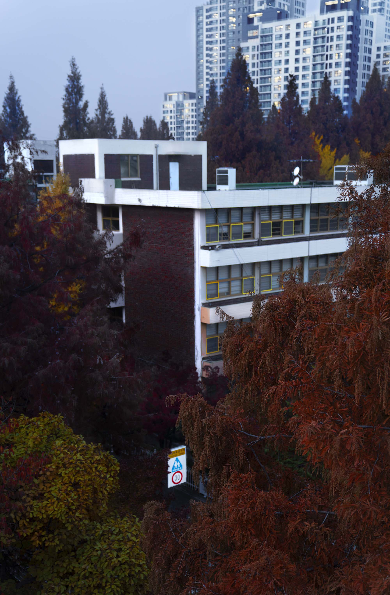
반포 아파트_버드나무의 성장3
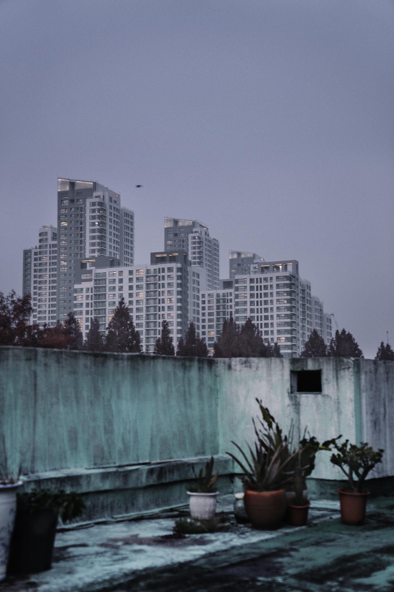
반포 아파트_버드나무의 성장2
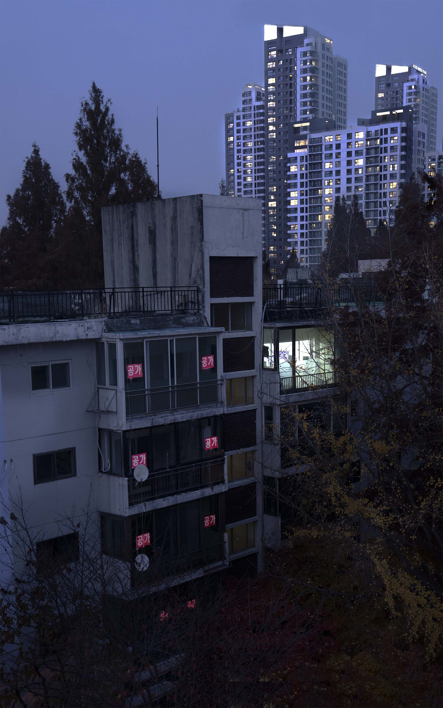
반포 아파트_버드나무의 성장1
 반포 아파트_잼민이 시절
반포 아파트_잼민이 시절
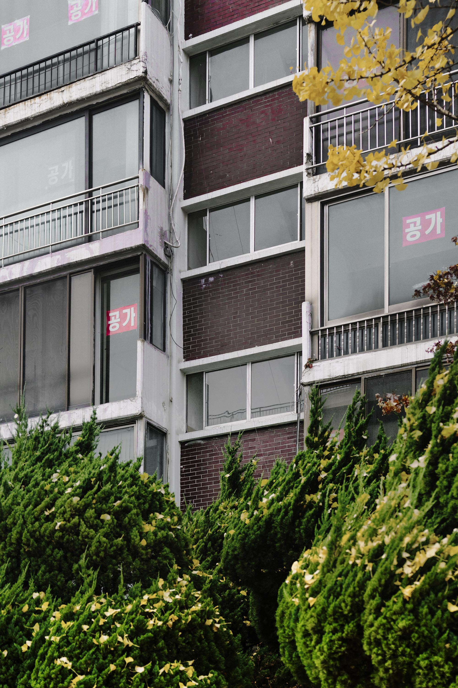
반포 아파트_가을꽃
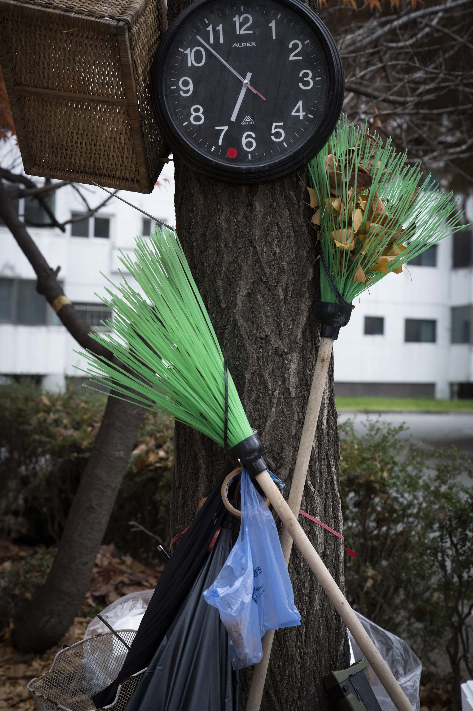
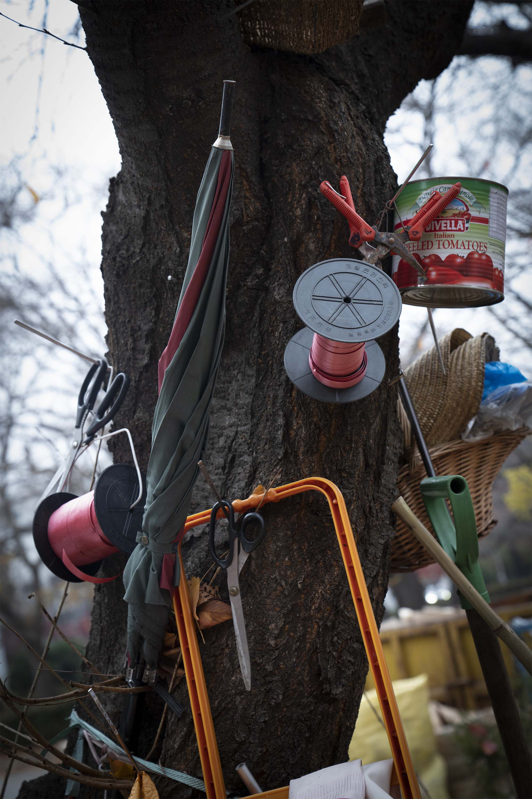
반포 아파트_그들의 쉼터1, 그들의 쉼터2
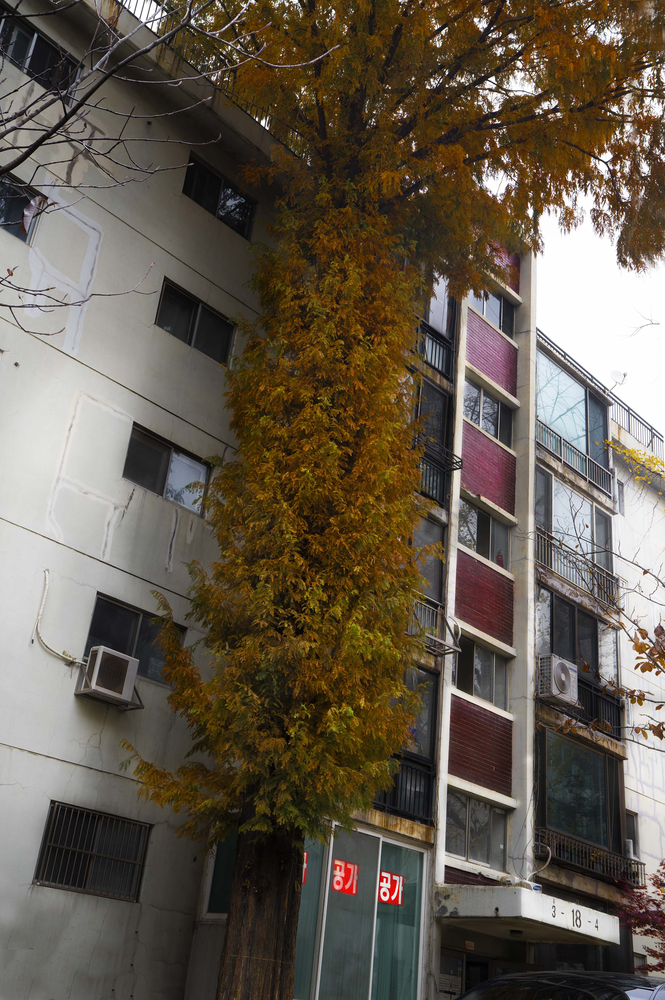
반포 아파트_키재기
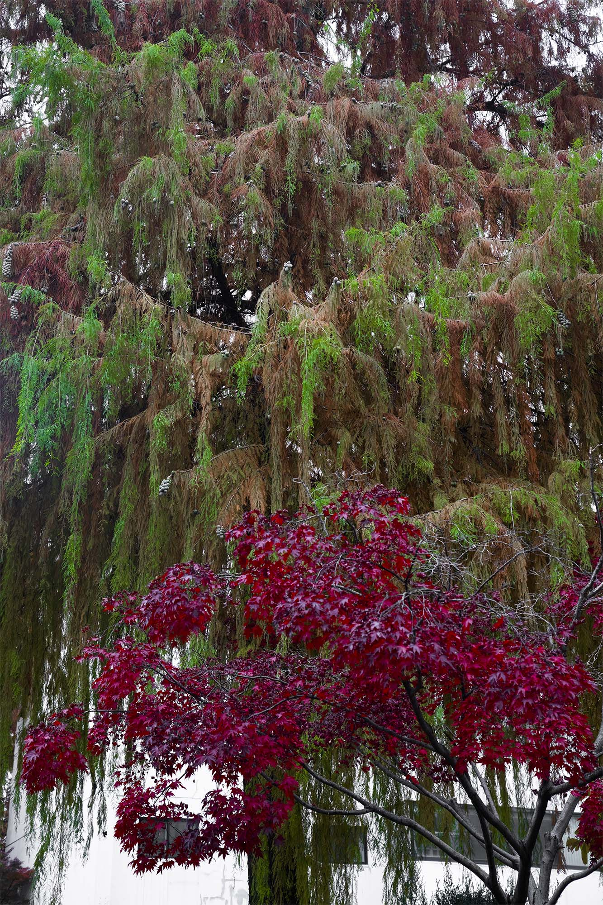
반포 아파트_불꽃놀이
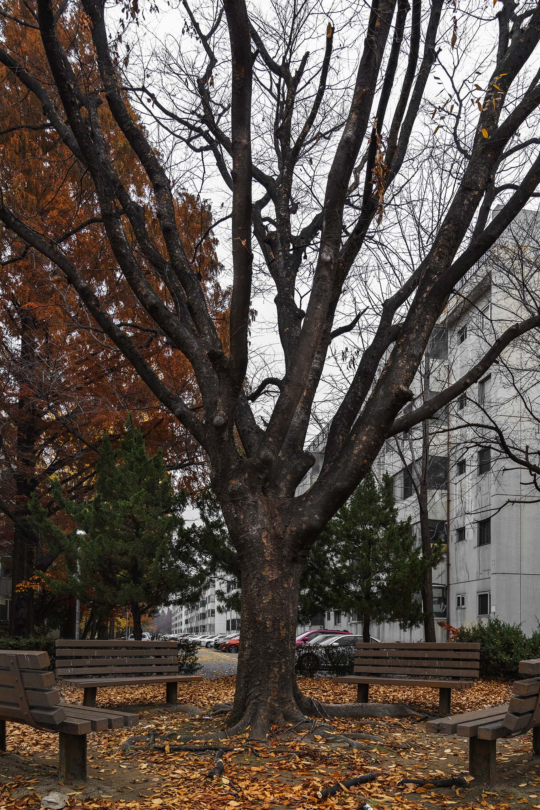
반포 아파트_손 인사
 반포 아파트_신도시
반포 아파트_신도시
 반포 아파트_쓰레기 조합장
반포 아파트_쓰레기 조합장
kay는 전에 살던 집에 다시 찾아가 보았다.
집은 여전히 허름했고 오래된 흔적들이 예전보다 눈에 곳곳이 띄었다. 하지만 그곳은 온기를 유지하고 있었고 누런 자국들은 결정들처럼 계속해서 뻗어나가 서로 관계를 맺고 있었다.
그 집의 옥상 테라스 풍경은 빌딩숲과 네온사인에 둘러싸인 외딴 섬이었다.
거기에는 샤워실과 수도가 하나 있었는데, 녹물이 나왔다. 아주 진하고 탁한 노란색의.
kay는 매일 그 물로 샤워하고 그 물을 마셨다. 며칠동안 그게 녹물인지도 모르고 먹고 씻고 하다 보니 목에서 피가 나왔다.
피가 나와서 기침을 계속했다. 황사바람이 몰아치는 사막의 한 가운데에 덩그러니 놓여진 것처럼.
아빠에게 녹물이 나온다는 사실을 말하자 아빠는 ( 왜 그동안 말을 안 했냐는 듯이 ) 방을 실내로 내려주겠다고 했다.
그리고 집에서 깨끗한 물이 나왔고,
kay는 그 집을 나와 유년시절 할아버지와 함께 살던 집에 찾아갔다.
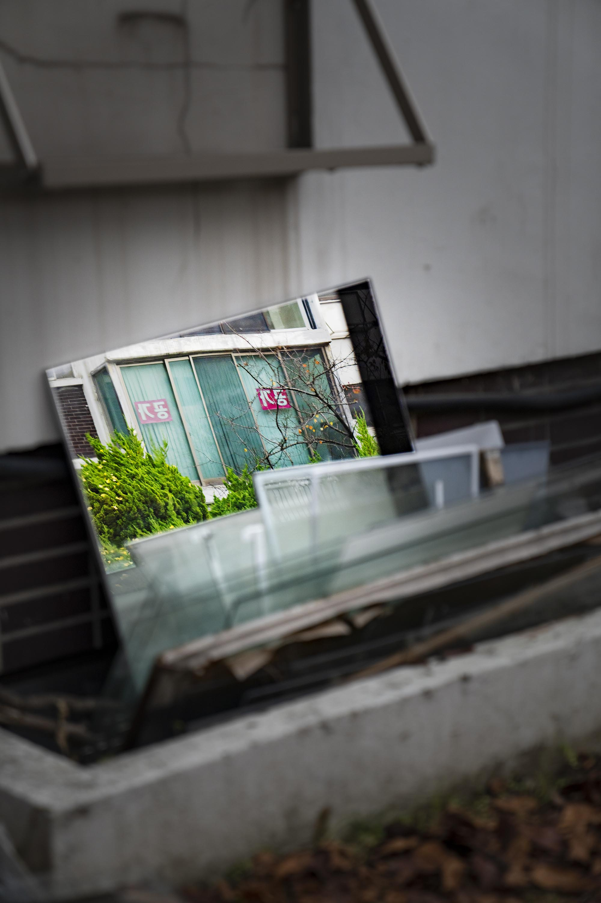
반포 아파트_내일
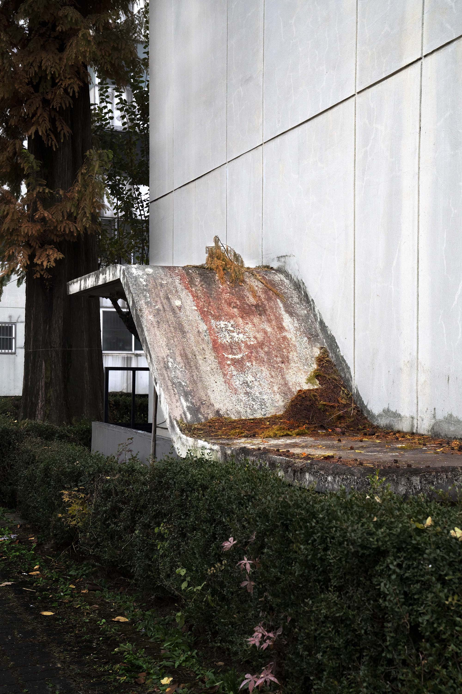
반포 아파트_지하실
kaya paik
Monument in my garden
2021 서울